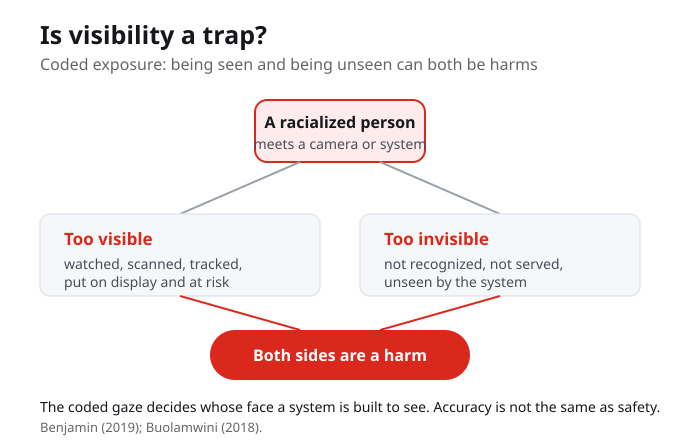

Is Visibility a Trap?
Coded exposure is about visibility itself, and it puts racialized people in a bind. On one side they are made too visible: watched, scanned, and tracked. On the other side they are made invisible: not recognized and not served. Being seen is a harm and being unseen is a harm, and the coded gaze decides whose face a system is built to see. Accuracy is not the same as safety.
Coded exposure is about visibility itself, and it puts racialized people in a bind. Being made too visible is a harm, and being made invisible is a harm, and both can happen at the same time.
Is visibility a trap? When is being seen by a system a protection, and when is it a risk?
Coded exposure
Coded exposure is about visibility itself, and it puts racialized people in a bind. On one side they are made too visible: watched, scanned, tracked. On the other side they are made invisible: not recognized, not served. Being seen is a harm, and being unseen is a harm. That double bind is the trap.
On one side, racialized people are made too visible: watched, scanned, and tracked. On the other side, they are made invisible: not recognized and not served. That double bind is the trap.

Benjamin plays on every meaning of the word exposure
Benjamin plays on every meaning of the word exposure: light on a sensor, a secret disclosed, being unprotected, being at risk, being put on display. Coded exposure is all of these, decided unevenly across race.
Benjamin uses every sense of the word exposure at once: light on a sensor, a secret disclosed, being unprotected, being at risk, being put on display. Coded exposure is all of these, decided unevenly across race.
What are the different meanings of exposure, and how does Benjamin use all of them at once?

A line that says it: I think my Blackness
There is a line that says it: I think my Blackness is interfering with the computer's ability to follow me. Joy Buolamwini calls this the coded gaze, whose face a system is built to see. In 2018 she and Timnit Gebru measured it: facial-analysis systems were near-perfect on lighter-skinned men and far worse on darker-skinned women. The error fell hardest at the intersection of race and gender.
Joy Buolamwini calls this the coded gaze: whose face a system is built to see. In 2018 she and Timnit Gebru measured it, and facial-analysis systems were near-perfect on lighter-skinned men and far worse on darker-skinned women. The error fell hardest at the intersection of race and gender.
You meet a camera or a recognition
So when you meet a camera or a recognition system, ask: who does it see too well and put at risk, who does it fail to see, and whose images trained it. Accuracy is not the same as safety.
When you meet a camera or a recognition system, ask who it sees too well and puts at risk, who it fails to see, and whose images trained it. Accuracy is not the same as safety.
Who is made hyper-visible by a system you use, and who is made invisible by it?
The evidence behind the coded gaze
The coded gaze is not a feeling, it is a measurement. In 2018 Buolamwini and Gebru built a benchmark balanced by gender and skin type, then tested commercial facial-analysis systems against it. Darker-skinned women were misclassified up to 34.7 percent of the time. Lighter-skinned men, 0.8 percent. The gap was widest exactly where race and gender meet.
Darker-skinned women, up to 34.7 percent error; lighter-skinned men, 0.8 percent. A single-axis test, by gender alone or skin tone alone, would have averaged that gap away.
Not one bad product
It was not a single broken system. Buolamwini and Gebru audited three: IBM, Microsoft, and Face++. Every one of them failed darker-skinned women the most. When the same harm shows up across an industry, the cause is the design and the data, not one bad actor.
Three companies, three systems, one pattern. The coded gaze is an industry-wide effect, which is why naming the mechanism matters more than blaming a single programmer.
Where coded exposure lands
These systems do not stay in a lab. In Canada they are deployed in policing and at borders. The Privacy Commissioner of Canada found the RCMP use of Clearview AI facial recognition unlawful. The people a biased system fails are often the same people it is used to watch. That is where accuracy and safety come apart.
A scanner that works well does not protect the people it identifies at a protest or a border, it exposes them. Deployment, not just accuracy, decides the harm.
Your turn: audit it yourself
You do not have to take this on faith. This week you will run that same balanced benchmark on the three real systems and find the bias the makers missed. Predict who it fails before you run it, slice the results, and name what you see with the reading.
Predict, then run the audit, then see the result, then name it with the reading. That is how the coded gaze stops being a claim and becomes something you can measure.
What You Are Learning This Week
Coded Exposure Distributes Visibility By Design
Coded exposure is Benjamin's third dimension of the New Jim Code: visibility itself is engineered unevenly across race. Some people are made hyper-visible to systems while others are made invisible, and that uneven distribution is designed, not accidental.
Visibility Cuts Both Ways At Once
Being too visible is a harm: you are watched, scanned, and tracked. Being invisible is also a harm: you are not recognized and not served. For racialized communities both can happen at the same time, which is why Benjamin calls visibility a trap rather than a simple good.
The Coded Gaze Decides Whose Face Counts
The coded gaze, Joy Buolamwini's term, names whose face a system is built to see. The webcam user who said my Blackness is interfering with the computer's ability to follow me was describing it. In 2018 Buolamwini and Gebru measured the gap, near-perfect on lighter-skinned men and far worse on darker-skinned women.
Accuracy Is Not The Same As Safety
A system that sees you well can still put you at risk by watching, scanning, and exposing you. High accuracy does not guarantee safety, so the right question is not only how often a system errs but who it sees too well, who it fails to see, and whose images trained it.